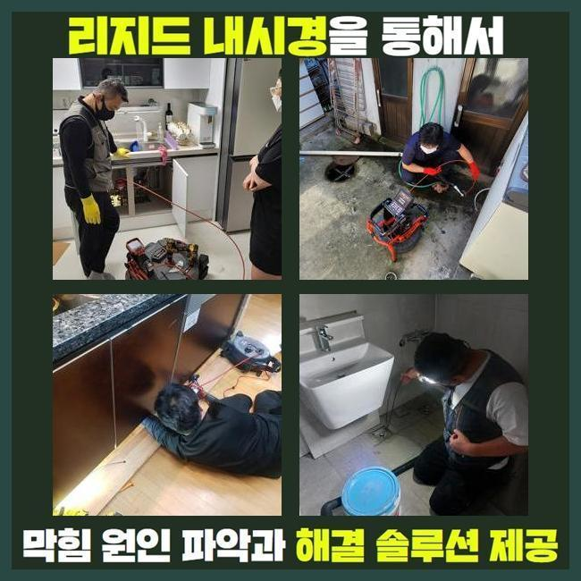
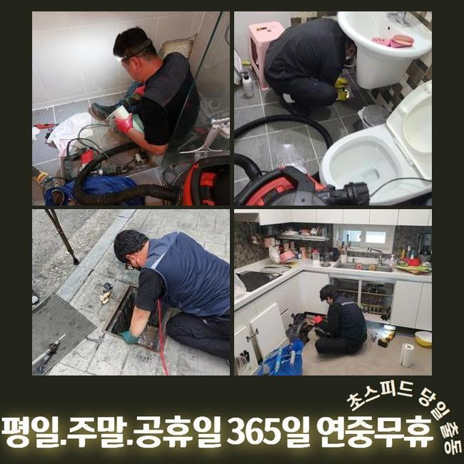
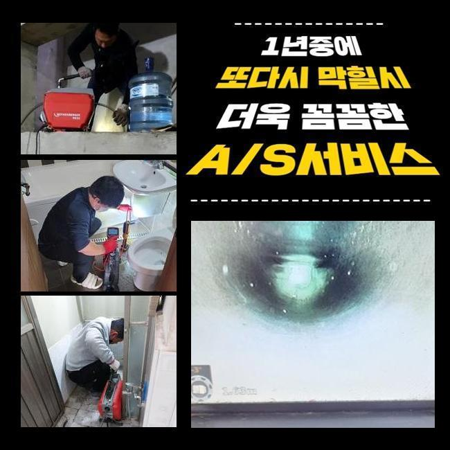
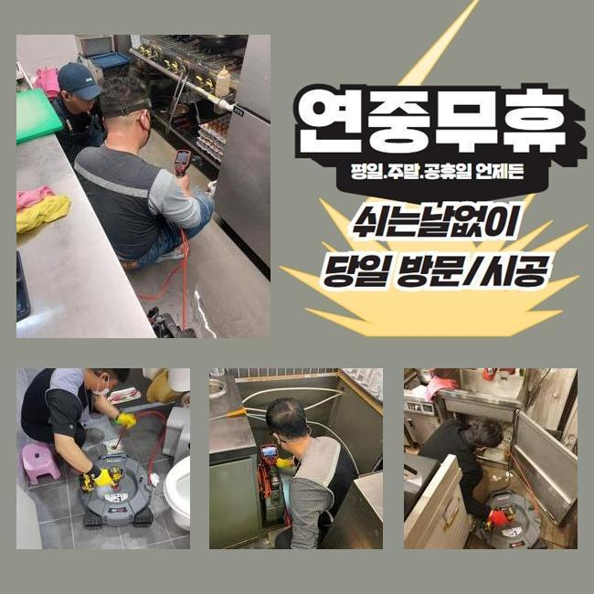
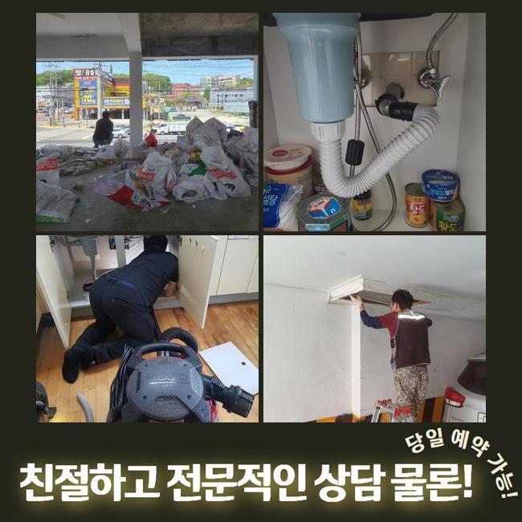

🏠 영등포 신길동씽크대역류 당산동 오수맨홀청소 배관막힘누수업체
서울 영등포구 싱크대막힘 전문 시공 후기

📋 작업 개요
- 위치: 서울 영등포구, 영등포구, 서울
- 서비스 유형: 싱크대막힘, 하수구막힘, 배관막힘, 맨홀막힘, 누수수리, 역류해결, 뚫는업체, 배관청소, 고압세척, 악취차단
- 작업 일시: 2024. 12. 23. 15:54
- 업체명: 하수구수사대 (010-5615-2118)
🔍 문제 상황
영등포 신길동씽크대역류 당산동 오수맨홀청소 배관막힘누수업체
지역 내의 식당에서 하수관의 차단으로 인해 당장 가게 오픈을 못한다며 말씀하시면서 얼른 출장와달라고 의뢰건을 받았습니다
식품을 판매하는 곳에서는 하수구 구멍이 봉쇄되는 증세로 주방 시설물을 활용하지 못하게 된다면 음식 만드는 활동이 어려우니 한동안 문을 닫아야 할겁니다
하수구 통수를 내줘야 영업불가로 인한 피해를 감소시킬 수 있으니 해당공간에 빨리 방문해서 작업을 시행하기로 결정했습니다
저희가 가자마자 고객님은 주방 쪽의 배수가 중단돼서 물 배출이 느릿해지고 더 아래에 있는 하수구에서 역류까지도 일어난 것도 문제라고 봐달라고 하셨습니다
고객님의 생활반경에 있는 부엌 부근의 배수구도 개선시키고 야외의 배수시스템까지 수습을 해드려야 하므로 쉽게 끝나지는 않는 작업이 불가피했습니다
문제되는 장소를 마주하면 전반적인 막힘 현황을 고려해본 다음에 이번 업무의 소요시간을 검토해 봅니다
평범하지 않은 관로 구조나 데미지를 크게 입은 곳이라면 말끔하게 고치려면 약간 더 걸리기도 합니다
실내에 이어 바깥 하수구를 관찰해보니 겉면부터 산화가 진행된 상태에다 맨홀 옆의 바닥도 습기가 차서 깔끔치않은 모습이었습니다
작업 중의 결함이 나타나지 않도록 신중을 기하며 처리하려고 다짐하고 상황 분석에 돌입했습니다

🔎 원인 분석
💡 전문가 진단: 정밀 진단 장비를 사용하여 슬러지의 고착 여부를 판명하고 타격/세척 작업을 실시했습니다.
뚜껑을 들어내자마자 보이는 건 이물질들이 제법 많더라고요
혼탁한 슬러지 덩어리가 부상해 있는 걸 간편히 파악할 수 있는 상태라고 보여서 보이는 부분의 세척부터 착수하여 오염을 씻어줘야 했습니다
주방 측면의 배수구부터 말끔하게 닦아내고 저희의 내시경 장치를 넣어서 내측을 관찰해봐요
건물의 파이프라인이 어떻게 이어져 있는지 세부적으로 알아낸 다음 고압수의 물살의 힘으로 강력하게 흡착되어 있는 슬러지부터 떼기로 마음을 정했습니다
이 상태로는 내시경을 진입시켜도 현황을 체크할 수 없을 것 같아서 석션기로 잔수를 흡입하는 가동을 실시해주었습니다
석션기는 청소기와 유사하게 진공 방식으로 동작하는데 안에 고인 잔수와 침전물들을 철저히 한 곳으로 모아주는 역할을 담당하는데요
성능이 좋은 장비이므로 견고하지 않은 액체나 고체는 쉽게 기다란 석션 내부에 들어가서 누적됩니다
접착성 물질이거나 따개비처럼 착 달라붙어있는 물질들은 잘 떨어지지 못하니 석션기의 가동만으로는 배수로를 통쾌하게 소통시키는 확률이 떨어집니다
하지만 처음과 마무리에 변함없이 석션기를 활용하여 작업할 정도로 배수로 기능을 되돌리는 업무를 처리하려면 반드시 써야하는 통과의례에요
석션을 돌려서 배관 통로를 빨아당겨주는 작업을 하고서 다음으로 카메라를 내려보냈죠
내시경을 쓰게 된다면 땅바닥 아래에 깔린 채 독특하게 배치된 관로라도 이곳저곳 조사해보며 원인이 된 대상과 얼마나 더럽혀졌는지에 대해 객관적으로 볼 수 있습니다

🔧 작업 과정
신중하게 모니터링을 해보니 기름기가 잔뜩 고인 기름질들이 다수 발견됐습니다
결과를 내보면 이것들이 위급한 연락을 주신 식당의 주요한 촉매제가 되었을 거라는 느낌을 받았습니다
알게모르게 배수관 내측으로 빠져나간 기름기가 내부 공간을 채워갔고 접착되어 액상인 수돗물 마저 내려갈 곳을 상실하게 되고 이물질과 하수가 더 누적되면서 바닥인 윗쪽으로 향했던 것 같아요
석션과 샤프트를 병행해서 세정해 나가면서 실내관로들를 통과한 물이 모이는 맨홀 내부의 시설물까지 보완을 해드려야 했는데요
플렉스 샤프트는 유연한 몸체를 지녔고 예리한 금속의 헤드가 자리하고 있습니다
석션작업만으로는 힘든 크기가 큰 침전물이나 마치 망부석처럼 제자리에 붙어버린 고착물을 긁어내거나 작은 입자로 분해할 수 있습니다
초기에 쓰는 석션기와 본작업 스케일링 배관의 카메라까지 모조리 필요에 따라 활용해야 청소가 만족스럽게 끝나며 꿈쩍도 하지 않는 배관의 경로를 확보할 수 있습니다
맡아야 할 배관이 복잡다단한 케이스여서 높은 수압으로 청소하는 방식도 도움이 될 것 같았습니다
거듭 갈아주고 빨아들이면서 물길이 제법 좋아졌다는 걸 체감하고 다음으로 고압수 청소기계를 넣어서 속시원하게 청소해 나갔습니다
높은 압력으로 응축된 물줄기를 정확한 포인트로 이동시켜주는 장비 몸체 위치를 설정해서 이물질의 밀집도가 높은 섹션을 매끈하게 만들어나갔습니다
그 결과 둥둥 떠다니면서 배관 직경만큼 자라났던 슬러지들이 싹 사라졌네요
청소기기를 돌리기 전에 내시경으로 배관 속의 현황에 대해 차분하게 관찰한 다음에 끈기 있는 청소를 실시해서 많게만 느껴졌던 오물들을 삭제시켜야하는 이번 현장에서도 탁월한 결과물을 창출했습니다
오늘의 프로세스를 끝내고 안쪽의 변화를 확인하니 통로도 훤하게 트이고 무르기도 단단하기도했던 노폐물들이 통로 어디에서도 감지되지 않았고 벽면에 붙었던 오일막들도 사라져서 배관이 더 깔끔해진 것을 드디어 목격하게 됐습니다
희뿌연한 색으로 관로에 찰랑대던 물도 완전히 시원스레 없어지고 그 모든 더러운 찌꺼기가 해소되었습니다
아무래도 음식점과 같은 매장은는 식용유를 사용하는 양도 대폭 증가하기 때문에 그렇다보니 하수관이 고장날 상황이 자주 재발됩니다!
음식물 쓰레기는 기본이고 식용류 잔여량이 하수구로 진입하지 않도록 주방시설을 활용할 때 조금 경각심을 가지면 좋습니다
하수구가 깨끗해진 걸 확인했다면 출수하고 경과를 보면서 작업이 원만하게 끝이 났는지 기능개선을 테스트합니다


✅ 작업 완료
개수대 안에서 수돗물을 쏟아준 다음에 고압세척 작업을 한 외부하수구까지 중간에 멈추는 느낌 없이 배출이 시원하게 되는지 체크해주는 작업입니다
옥외까지 내려보낸 물이 옥외 관로로 속속들이 모여드는 게 감지되어 다행이었습니다
하수배관이 정상화가 됐으니 질의응답이 있다면 친절하게 받고 자리를 뜨게 됐습니다
하수구가 봉인되어 버리면 비용을 절약하려는 일념으로 스스로 뚫어보려다가 오염원이 더 집적될 수 있습니다
배관문제에 대해 의뢰해주시면 얼른 달려가서 막힘이 나타난 사유를 파악 후에 청소하니 전문적 조치를 받아보시기 바랍니다!



⚠️ 베란다 누수 및 방수 관리 방법
- ✅ 비가 많이 올 때 창틀 주변이나 아래층 천장에 얼룩이 생기는지 정기적으로 확인해 보세요.
- ✅ 우수관 주변 실리콘 마감이 들뜨거나 깨진 틈새가 있는지 손상 여부를 수시로 체크하세요.
- ✅ 베란다 바닥 타일의 줄눈(메지)이 소실되면 그 틈으로 물이 침투하여 누수가 유발됩니다.
- ✅ 누수 의심 증상 발견 시 방치하면 아래층 손실이 커지므로 즉시 전문가의 진단을 받으십시오.
💡 핵심 정리
- 확실한 장비 작업(내시경 점검 및 샤프트 스케일링)으로 원인을 뿌리 뽑습니다.
- 작업 후 1년 이내에 동일한 부위 재발 시 100% 무상 A/S 서비스를 보장합니다.
- 서울 · 경기 · 인천 전 지역에 24시간 언제든 긴급 출동할 수 있도록 항시 대기 중입니다.
❓ 자주 묻는 질문 (FAQ)
🚨 서울 영등포구 싱크대막힘 문제로 고민이신가요?
정확한 원인 진단과 확실한 시공으로 재발 없는 해결을 약속드립니다.
24시간 긴급 출동 | 서울 · 경기 · 인천 전지역 | 1년 내 재발 시 무상 A/S